Our group's research lies in the intersection of machine learning and computer vision, aiming to advance computational understanding of real-world dynamics. We investigate this through intuitive physical inference and model-based reinforcement learning, aiming to equip agents with purposeful imagination capabilities that generalize and scale across complex, open-world scenarios.
I received my Ph.D. and M.E. degrees from Tsinghua University, advised by Philip S. Yu,
Mingsheng Long,
and Yangdong Deng,
and my B.S. degree from Xi'an Jiaotong University.
I also spent time in Josh Tenenbaum's lab at MIT working with Jiajun Wu in probabilistic planning and model-based reinforcement learning.
For prospective graduate students:
I appreciate your interest in joining our group! We have 0 open position for Ph.D. students and 1 open position for Master students in Class 2026 in School of Computer Science.
MetaTrader: Learning to Generalize RL Trading Policies Beyond Offline Data
Haochen Yuan*, Minting Pan*, Yunbo Wang*, Siyu Gao, Xiaokang Yang AAAI 2026
[PDF]
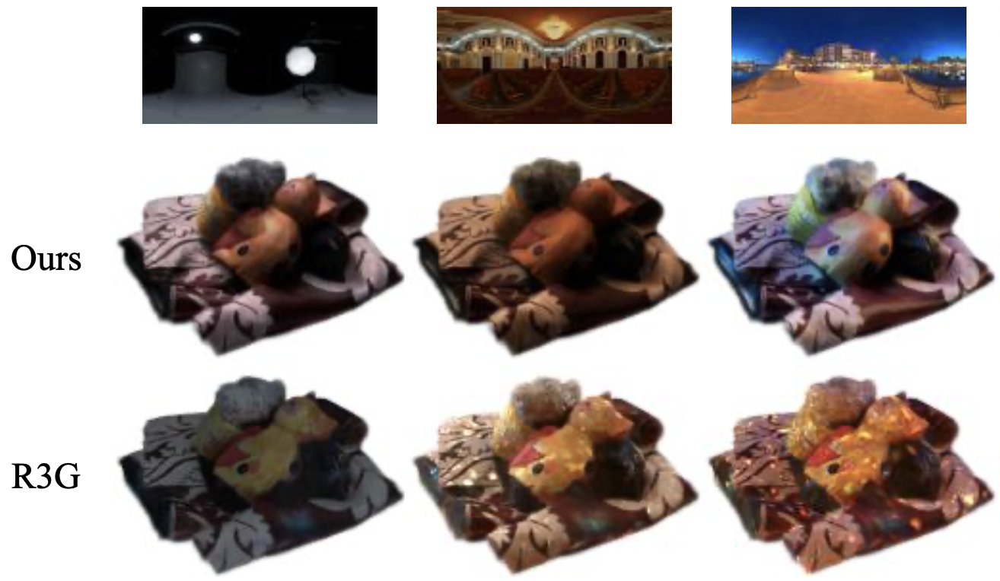
MetaGS: A Meta-Learned Gaussian-Phong Model for Out-of-Distribution 3D Scene Relighting
Yumeng He, Yunbo Wang*, Xiaokang Yang NeurIPS 2025 Spotlight (Top 3.5%)
[PDF]
[Project]
[Code]
[Dataset]
Disentangled World Models: Learning to Transfer Semantic Knowledge from Distracting Videos for Reinforcement Learning
Qi Wang, Zhipeng Zhang, Baao Xie, Xin Jin, Yunbo Wang, Shiyu Wang, Liaomo Zheng, Xiaokang Yang, Wenjun Zeng ICCV 2025
[PDF]
[Project]
[Code]
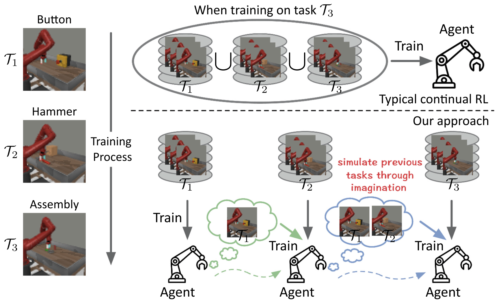
Continual Visual Reinforcement Learning with A Life-Long World Model
Minting Pan, Wendong Zhang, Geng Chen, Xiangming Zhu, Siyu Gao, Yunbo Wang*, Xiaokang Yang ECML 2025
[PDF]
[Code]
Dynamic Scene Understanding through Object-Centric Voxelization and Neural Rendering
Yanpeng Zhao, Yiwei Hao, Siyu Gao, Yunbo Wang*, Xiaokang Yang TPAMI 2025
[PDF]
[Project]
[Code]
[Dataset]
Open-World Reinforcement Learning over Long Short-Term Imagination
Jiajian Li*, Qi Wang*, Yunbo Wang*, Xin Jin, Yang Li, Wenjun Zeng, Xiaokang Yang ICLR 2025 Oral (Top 1.8%)
[PDF]
[Project]
[Code]
NeoWorld: Neural Simulation of Explorable Virtual Worlds via Progressive 3D Unfolding
Yanpeng Zhao, Shanyan Guan, Yunbo Wang*, Yanhao Ge, Wei Li, Xiaokang Yang arXiv
[PDF]
[Project]
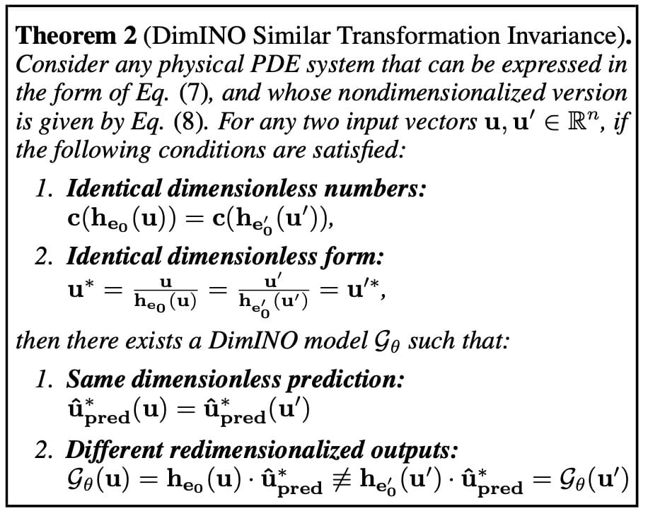
DimOL: Dimensional Awareness as A New 'Dimension' in Operator Learning
Yichen Song, Yunbo Wang*, Xiaokang Yang arXiv
[PDF]
[Code]
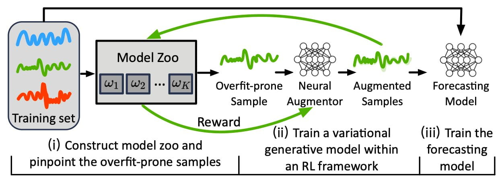
ReAugment: Model Zoo-Guided RL for Few-Shot Time Series Augmentation and Forecasting
Haochen Yuan, Yutong Wang, Yihong Chen, Yunbo Wang*, Xiaokang Yang arXiv
[PDF]
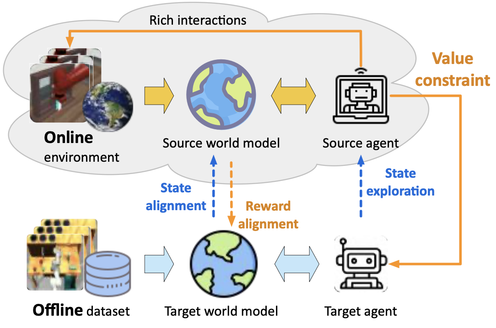
Making Offline RL Online: Collaborative World Models for Offline Visual Reinforcement Learning
Qi Wang*, Junming Yang*, Yunbo Wang*, Xin Jin, Wenjun Zeng, Xiaokang Yang NeurIPS 2024
[PDF]
[Project]
[Code]
[Dataset]
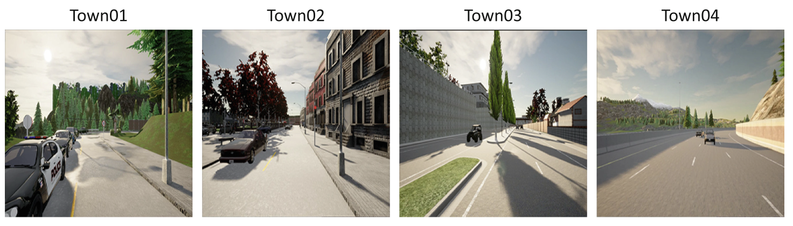
Model-Based Reinforcement Learning with Multi-Task Offline Pretraining
Minting Pan*, Yitao Zheng*, Yunbo Wang*, Xiaokang Yang ECML 2024
[PDF]
[Code]
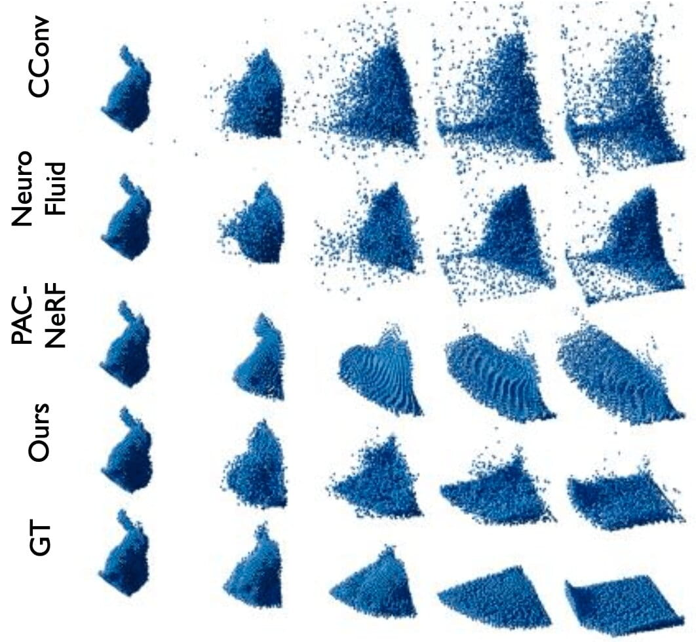
Latent Intuitive Physics: Learning to Transfer Hidden Physics from A 3D Video
Xiangming Zhu*, Huayu Deng*, Haochen Yuan*, Yunbo Wang*, Xiaokang Yang ICLR 2024
[PDF]
[Project]
[Code]
[Dataset]
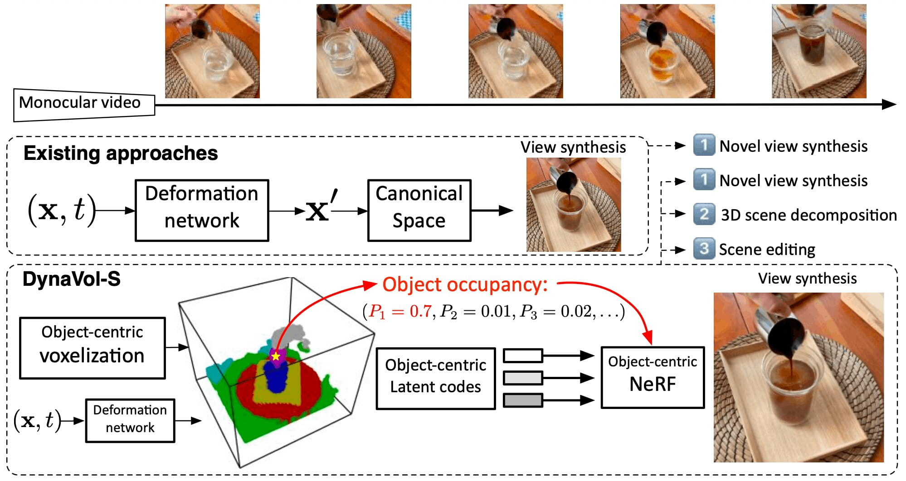
DynaVol: Unsupervised Learning for Dynamic Scenes through Object-Centric Voxelization
Yanpeng Zhao*, Siyu Gao*, Yunbo Wang*, Xiaokang Yang ICLR 2024
[PDF]
[Project]
[Code]
[Dataset]
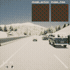
Model-Based Reinforcement Learning with Isolated Imaginations
Minting Pan, Xiangming Zhu, Yitao Zheng, Yunbo Wang*, Xiaokang Yang TPAMI 2023
[PDF]
[Code]
Improving Masked Autoencoders by Learning Where to Mask
Haijian Chen*, Wendong Zhang*, Yunbo Wang*, Xiaokang Yang* PRCV 2023 (Best Student Paper Award Nomination)
[PDF]
[Code]
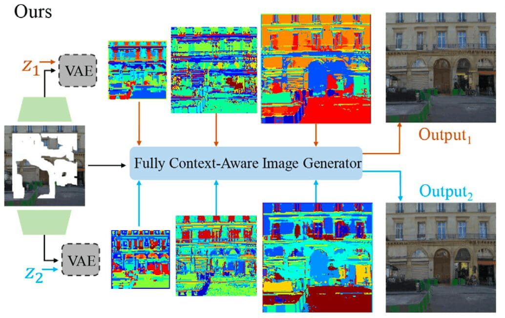
Fully Context-Aware Image Inpainting with a Learned Semantic Pyramid
Wendong Zhang, Yunbo Wang*, Bingbing Ni, Xiaokang Yang Pattern Recognition 2023
[PDF]
[Code]
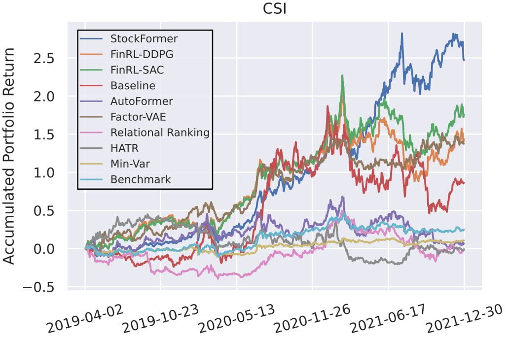
StockFormer: Learning Hybrid Trading Machines with Predictive Coding
Siyu Gao, Yunbo Wang*, Xiaokang Yang IJCAI 2023
[PDF]
[Code]
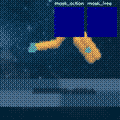
Iso-Dream: Isolating and Leveraging Noncontrollable Visual Dynamics in World Models
Minting Pan*, Xiangming Zhu*, Yunbo Wang*, Xiaokang Yang NeurIPS 2022 Spotlight
[PDF]
[Project]
[Code]
Out-of-Domain Human Mesh Reconstruction via Dynamic Bilevel Online Adaptation
Shanyan Guan, Jingwei Xu, Michelle Z. He, Yunbo Wang*, Bingbing Ni, Xiaokang Yang TPAMI 2022
[PDF]
[Project]
[Code]
Continual Predictive Learning from Videos
Geng Chen*, Wendong Zhang*, Han Lu, Siyu Gao, Yunbo Wang*, Mingsheng Long, Xiaokang Yang CVPR 2022 Oral
[PDF]
[Project]
[Code]
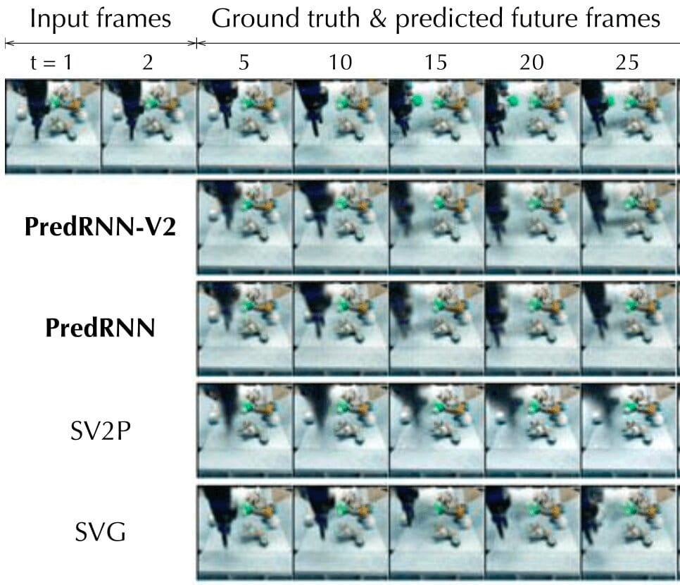
PredRNN: A Recurrent Neural Network for Spatiotemporal Predictive Learning Yunbo Wang*, Haixu Wu*, Jianjin Zhang, Zhifeng Gao, Jianmin Wang, Philip S. Yu, Mingsheng Long* TPAMI 2022 (ESI - Top 1% highly cited)
[PDF]
[Code]
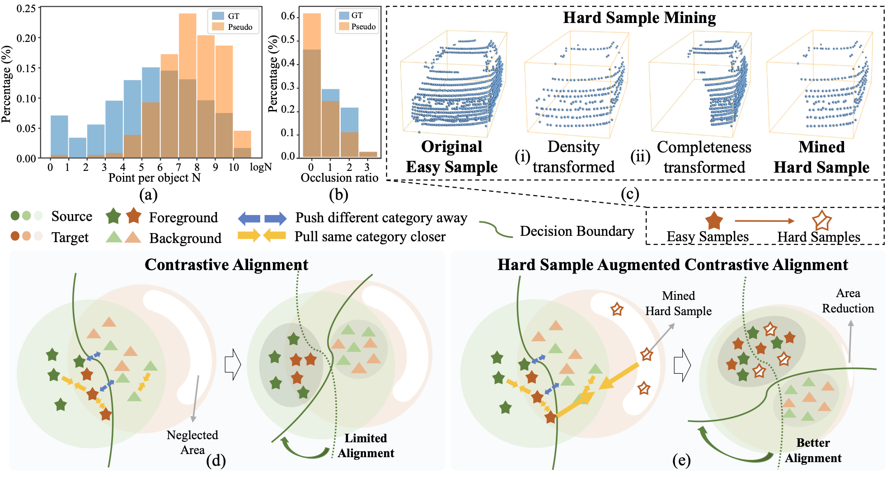
Learning Transferable Features for Point Cloud Detection via 3D Contrastive Co-training
Yihan Zeng*, Chunwei Wang*, Yunbo Wang, Hang Xu, Chaoqiang Ye, Zhen Yang, Chao Ma NeurIPS 2021
[PDF]
[Supplement]
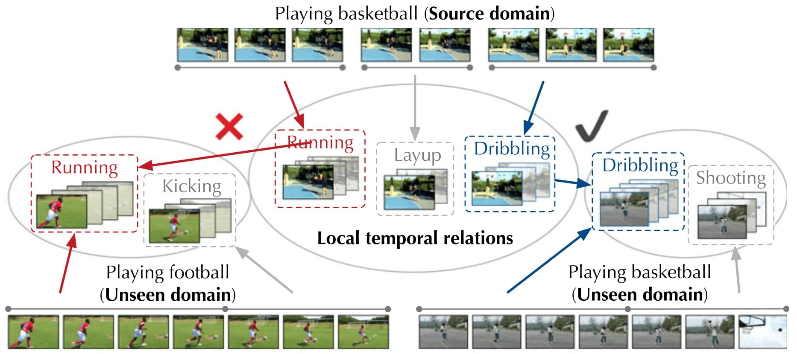
VideoDG: Generalizing Temporal Relations in Videos to Novel Domains
Zhiyu Yao*, Yunbo Wang*, Jianmin Wang, Philip S. Yu, Mingsheng Long* TPAMI 2021
[PDF]
[Code]
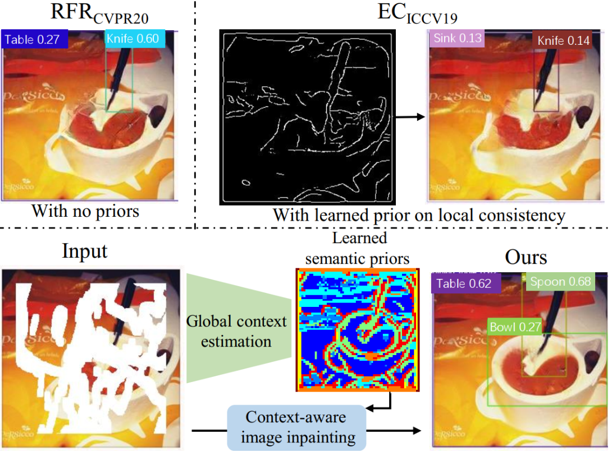
Context-Aware Image Inpainting with Learned Semantic Priors
Wendong Zhang, Junwei Zhu, Ying Tai, Yunbo Wang*, Wenqing Chu, Bingbing Ni, Chengjie Wang, Xiaokang Yang IJCAI 2021
[PDF]
[Code]
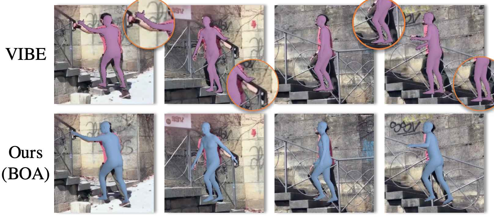
Bilevel Online Adaptation for Out-of-Domain Human Mesh Reconstruction
Shanyan Guan*, Jingwei Xu*, Yunbo Wang*, Bingbing Ni, Xiaokang Yang CVPR 2021
[PDF]
[Project]
[Code]
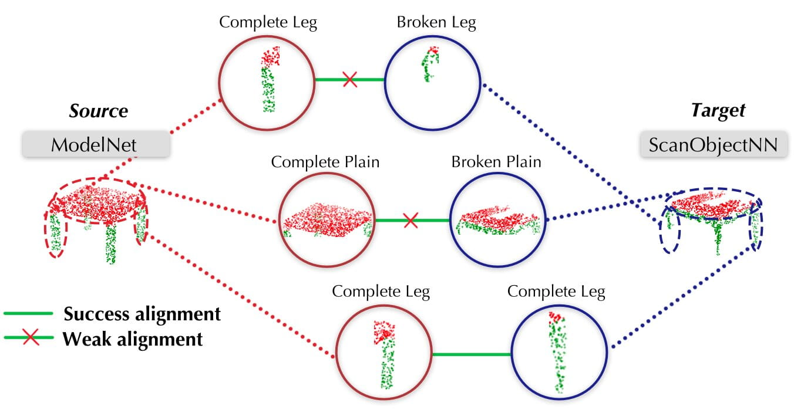
MetaSets: Meta-Learning on Point Sets for Generalizable Representations
Chao Huang*, Zhangjie Cao*, Yunbo Wang*, Jianmin Wang, Mingsheng Long* CVPR 2021
[PDF]
[Code]
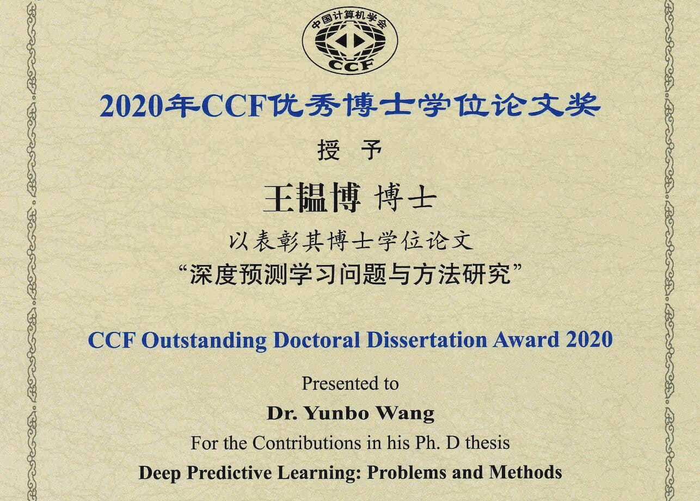
Deep Predictive Learning: Problems and Methods
PhD Dissertation (in Chinese) [PDF] Outstanding Doctoral Dissertation Award, China Computer Federation (CCF), 2020
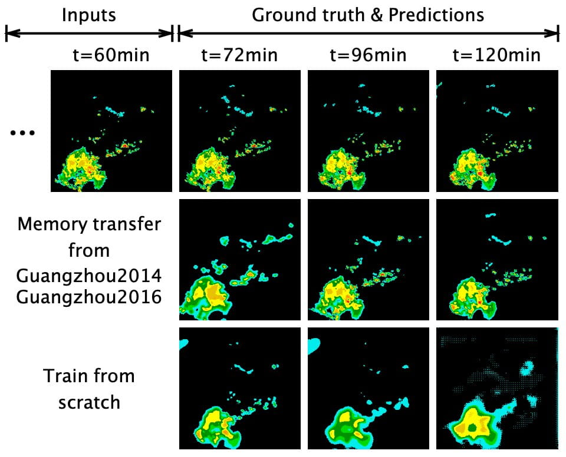
Unsupervised Transfer Learning for Spatiotemporal Predictive Networks
Zhiyu Yao*, Yunbo Wang*, Mingsheng Long*, Jianmin Wang ICML 2020
[PDF]
[Code]
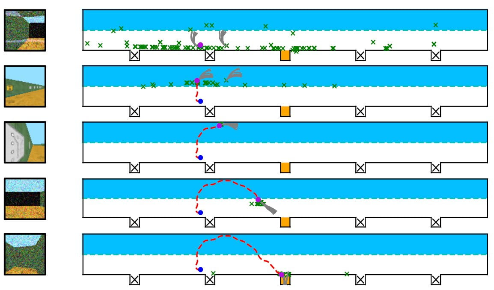
DualSMC: Tunneling Differentiable Filtering and Planning under Continuous POMDPs Yunbo Wang*, Bo Liu*, Jiajun Wu, Yuke Zhu, Simon S. Du, Li Fei-Fei, Joshua B. Tenenbaum IJCAI 2020
[PDF]
[Project]
[Code]
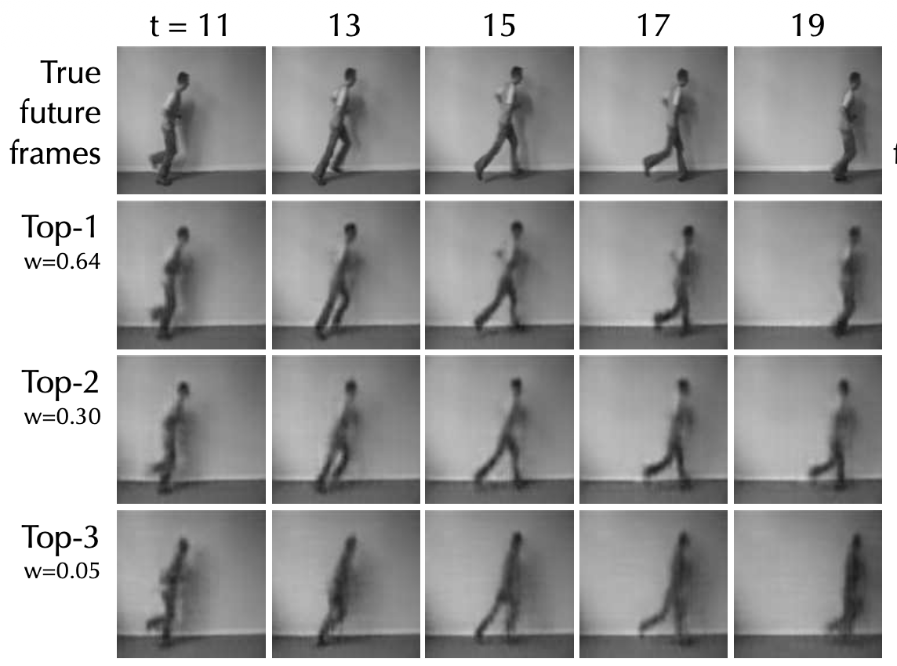
Probabilistic Video Prediction from Noisy Data with a Posterior Confidence Yunbo Wang, Jiajun Wu, Mingsheng Long, Joshua B. Tenenbaum CVPR 2020
[PDF]
[Project]
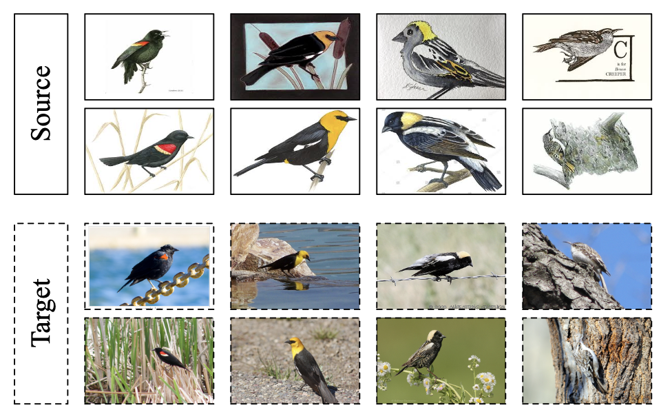
Progressive Adversarial Networks for Fine-Grained Domain Adaptation
Sinan Wang, Xinyang Chen, Yunbo Wang, Mingsheng Long*, Jianmin Wang CVPR 2020
[PDF]
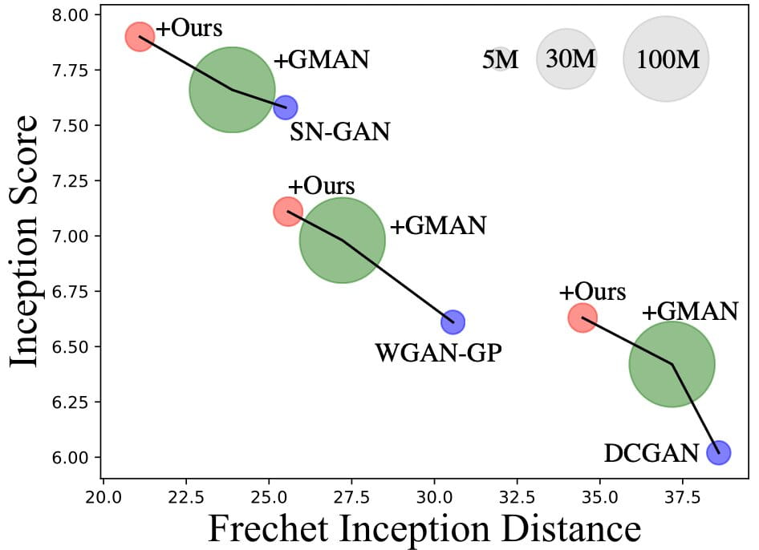
A Multi-Player Minimax Game for Diversifying Multi-Discriminators of Generative Adversarial Networks
Ying Jin, Yunbo Wang, Mingsheng Long*, Jianmin Wang, Philip S. Yu, Jiaguang Sun ICME 2020
[PDF]
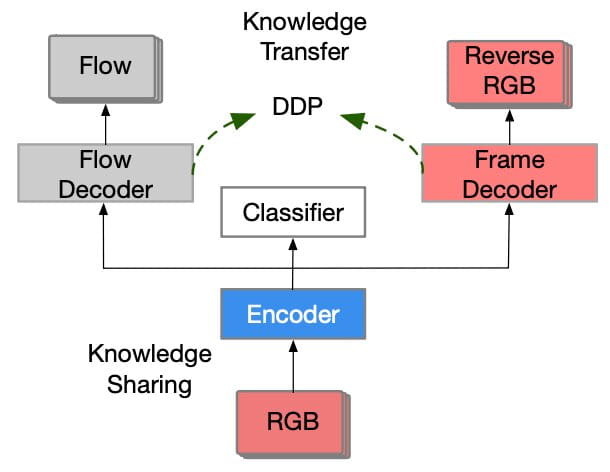
Multi-Task Learning of Generalizable Representations for Video Action Recognition
Zhiyu Yao*, Yunbo Wang*, Mingsheng Long*, Jianmin Wang, Philip S. Yu, Jiaguang Sun ICME 2020
[PDF]
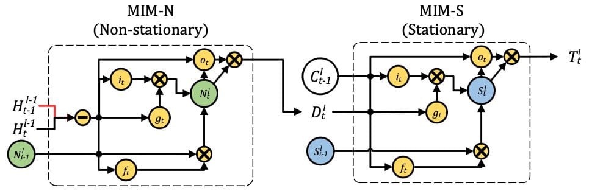
Memory In Memory: A Predictive Neural Network for Learning Higher-Order Non-Stationarity from Spatiotemporal Dynamics Yunbo Wang*, Jianjin Zhang*, Hongyu Zhu, Mingsheng Long*, Jianmin Wang, Philip S. Yu CVPR 2019
[PDF]
[Code]
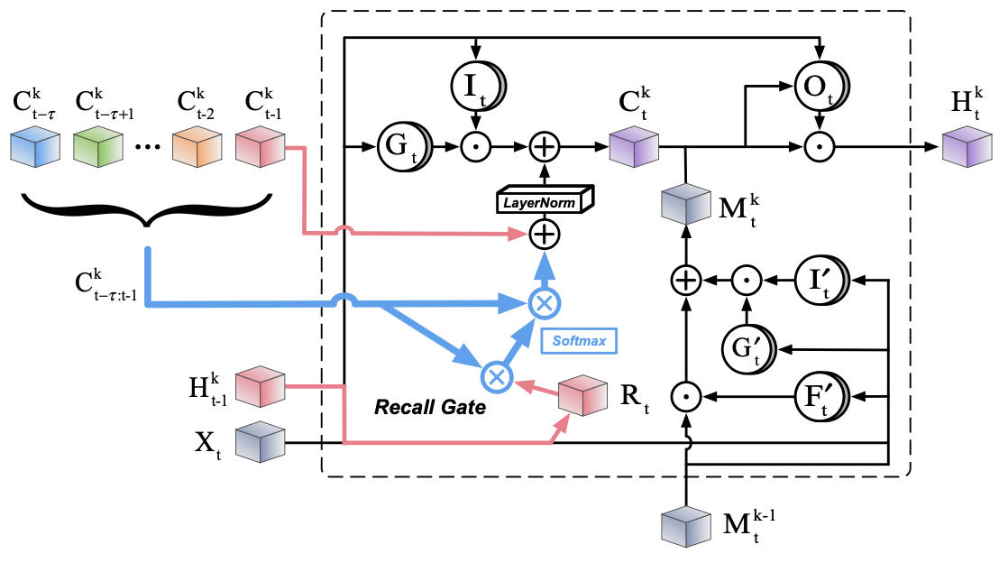
Eidetic 3D LSTM: A Model for Video Prediction and Beyond Yunbo Wang, Lu Jiang, Ming-Hsuan Yang, Li-Jia Li, Mingsheng Long, Li Fei-Fei ICLR 2019
[PDF]
[Poster]
[Code]
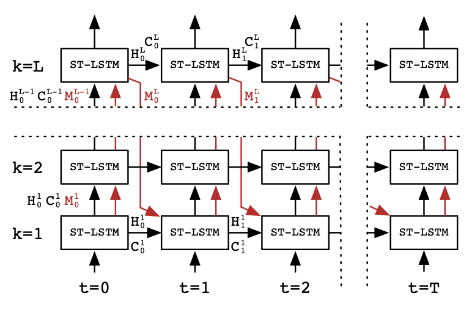
PredRNN++: Towards A Resolution of the Deep-in-Time Dilemma in Spatiotemporal Predictive Learning Yunbo Wang, Zhifeng Gao, Mingsheng Long*, Jianmin Wang, Philip S. Yu ICML 2018
[PDF]
[Code]
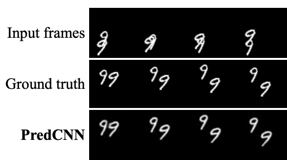
PredCNN: Predictive Learning with Cascade Convolutions
Ziru Xu*, Yunbo Wang*, Mingsheng Long*, Jianmin Wang IJCAI 2018
[PDF]
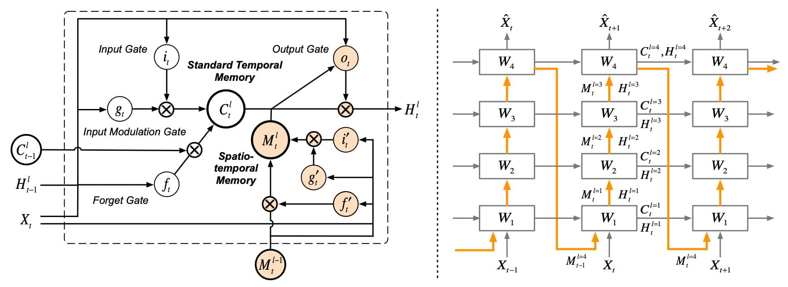
PredRNN: Recurrent Neural Networks for Predictive Learning Using Spatiotemporal LSTMs Yunbo Wang, Mingsheng Long*, Jianmin Wang, Zhifeng Gao, Philip S. Yu NeurIPS 2017
[PDF]
[Code]
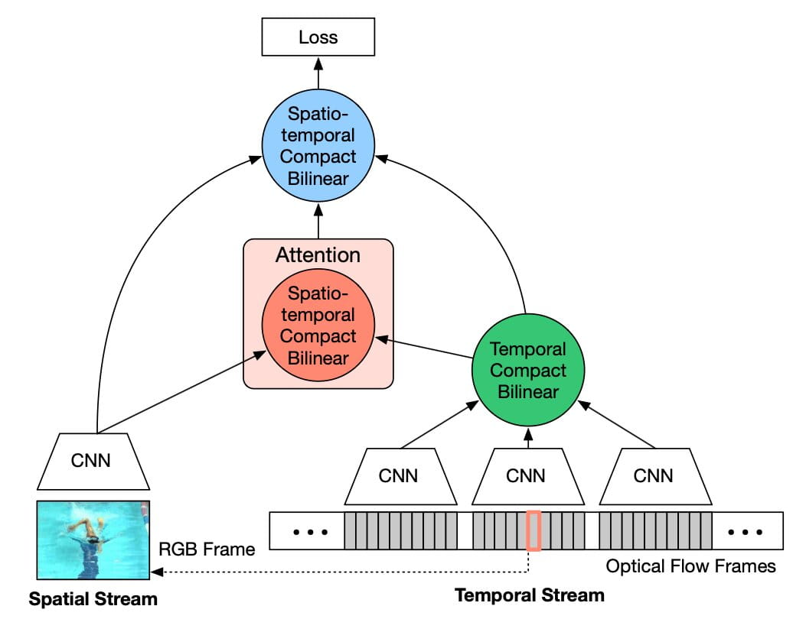
Spatiotemporal Pyramid Network for Video Action Recognition Yunbo Wang, Mingsheng Long*, Jianmin Wang, Philip S. Yu CVPR 2017
[PDF]
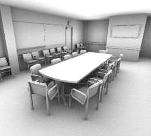
A Feasibility Study of Ray Tracing on Mobile GPUs Yunbo Wang, Chunfeng Liu, Yangdong Deng* SIGGRAPH Asia 2014
[PDF]
Teaching
JCCX0021: Fundamentals of Artificial Intelligence (Reinforcement Learning), 2022-2025
CS0502: Introduction to Computer Science, 2022-2025
Research Group
PhD students:
Huayu Deng (Co-supervised),
Xiangming Zhu,
Qi Wang (Co-supervised),
Haochen Yuan,
Yumeng He,
Yitao Zheng,
Jiajian Li,
Yichen Song (Co-supervised),
Yuetian Wang (Co-supervised),
Leyan Zhang,
Nantian He